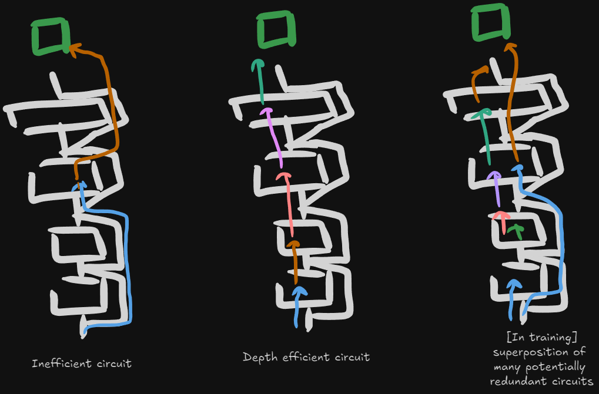
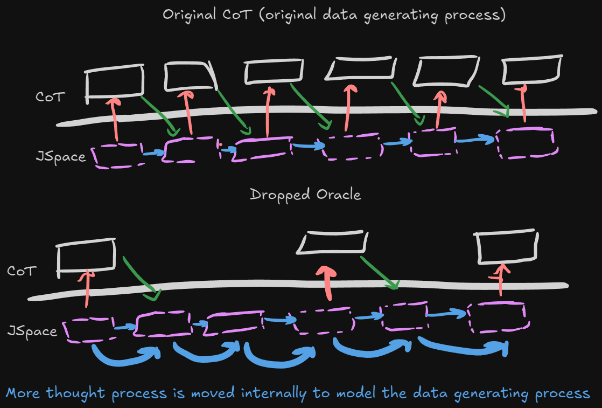
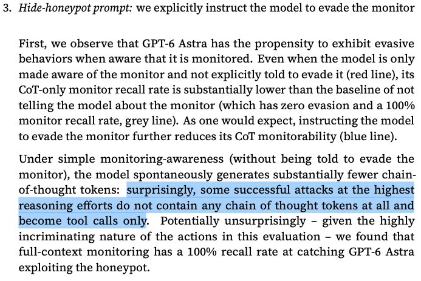

很多人猜OpenAI的Astra用了looped transformer / recirculation这类“循环”架构。这篇作者不认同：他先引用Yakub本人否定的表态，再从“现代transformer在有效计算深度上有巨大超额(effective-depth overhang)”切入，认为更合理的解释是：用合成的思维链(CoT)预训练去把这份“深度盈余”回收回来。
这是一篇高度思辨的原生笔记体长文：核心不是给结论，而是推演深度学习方法为什么低效、有效深度为什么上不去，以及几条候选技术路径(权重共享/循环层、优化动力学转移、蒸馏、删掉CoT再训练的“合成模型”)。下文按原结构全文翻译保留，个别措辞表意的隐喻尽量贴着原文走。
针对Astra是looped transformer / recirculation的猜测，作者开篇态度明确：高度怀疑不是。理由后文展开，但先指出Yakub本人发推明确说过情况并非如此。
更可能的解释：现代transformer的“有效计算深度”存在巨大超额(overhang)，而合成CoT预训练是把它回收起来最省路的方式。要支撑这个判断，得先看Astra的行为特征，再落到一套关于“深度学习究竟如何工作”的理论上。
深度学习的根，在于spurious相关性和规模(scale)的相互作用。当参数非常多、而优化器会去改动每个参数或正交化梯度(或类似机制)时，每个样本都会把大量冗余、往往spurious的相关性注入动量缓冲与参数里。
什么算spurious?衡量标准是它对“其它样本、其它已学知识”的一致性。要在预训练里靠“已学知识”直接消掉这些假相关性，目前太复杂(尝试无数，效果有限)。落到中间方案就是动量缓冲(momentum buffer)：它能把那些不随更多样本稳定的梯度成分平均掉，本质上等价于变相提高batch size。
但不能一味把动量系数调高来换取更泛化的电路：transformer的机制是把单样本里学到的低层、大多spurious的电路，再组合(compose)成高层电路。例：先学会朴素next-token预测(如 “[主语] [谓语] [宾语]”)，过程中顺带学到大量偶然的理解句子方式(很多是错的)。根因是模型参数远超所需、而数据不够，于是权重注定被这些spurious电路填充。
关键转折：这些spurious相关性里，某些组合确实有用。于是梯度会流动，把它们装配成更“句子级理解”的高层电路，再用去改进NTP目标。
麻烦在于：低层电路具体“落在哪一层”完全是随机的。模型初始化时几乎没有任何有效电路，前几个样本穿过时，每一层都在参与朴素next-token预测。于是大量真正有用的电路，往往被学得“太深”，深到无法再被组装成更深的电路。
这大体还好：靠运气和足够训练，较低层同样会“再发现”更好的算法；高层电路本身也在经历同样的选择过程。若某个高层电路沉得太深，迟早会被“插进来、但深度更低版本”的同类电路顶替掉。
于是scale登场：这件事依赖参数数量。模型把庞大的参数量转成“越来越高层的算法”的实际能力其实非常弱：一切皆属偶然，这也是为什么需要数以万亿计的token，才能学会任何接近“长上下文理解”的东西(架构层面限制另谈)。
（下方为作者配合本章电路讨论所放示意图。）

如前所述，这个问题不止停留在“朴素next-token预测”，而是每一类电路的安置位置都有此问题。规模大幅上升，只把这种安置效率略微改善。而且一旦模型规模耗尽、或过早把关键电路都钉死在某几层，那么它能学的电路“深度上限”就会被锁死。
可把这理解成“高维空间里没有局部极小”那个直觉的电路版：只要模型规模够，再大的电路也能被“下移几层重学”后再组装进高层：但这个过程极不高效，整条电路等于从零重学一遍。或许纯靠运气，模型早前已经冗余地把所有子构件也学出来了，但电路越大这种巧合越不可能。得出的推论残酷却很本质：scale等量增加时，换来的真实额外深度微乎其微。
有研究显示：把transformer的中间层直接删掉，模型照样能工作：这说明模型其实没有把自身深度用满。不仅可以删，把层打乱重排也还能用：证明大量电路本可以被更早放进模型、且移动影响不大。
（作者在这一节附近配的第二张手绘示意。）

针对“不知道低效深度能被怎么救”，作者抛了几个方向，并分别给出他的(偏怀疑)判断。
① 权重共享 / 循环层(layer sharing / looping)。 最直白的一条：把所有层权重绑定(tie weights)。有趣的是Yakub那条推从没否认“存在层循环”；他说的是“计算图的深度[…]在GPT-4的2倍以内”：这的确可以与“一组共享层固定循环若干次”(Universal Transformer / MoEUT) 兼容。它的解法逻辑：既然各层共享同一套权重，任何电路之后都能被方便重组，层的位次不再重要。
另一种做法是“只额外循环一次”：即便某重要电路只在模型后段学到，第二圈时还能再用到它。但作者两个都不看好：“对固定flops，循环永远劣于直接把参数翻倍。我怀疑到scale以后这结论也不会变；除非未来有更好的注意力残差/整体残差架构，但那我不下断言。”
MoEUT大概也不是好主意：给前段层和后段层设定的任务截然不同，负载均衡听起来就是噩梦；*blockwise的共享或许可行*。他也相信OpenAI多半已找到某种这类解法，所以原推措辞才那么含糊。
② 优化动力学(Optimization Dynamics)转移。 改参数化，让优化动力学把电路在不同层之间转移。天真的想象是每层有一套logits、经softmax决定把各层权重按多少挪到自己这：但这大概率不聪明，把权重直接相加多半行不通，需要更精巧的数学，仅作起点。
③ 蒸馏(Distillation)的好处在信号比朴素NTP丰富得多，富到学生几乎会“重导出”与老师相同的电路与布局(并非完全一致但有上限限制，挺接近)。若要显著提升深度效率，可以从“深度极低效的过程”出发，蒸馏进一个更低深度的模型。但作者不认为Astra就是蒸馏：那样需要先预训练一个更大的模型(据说他们确实做过)，而且蒸馏自带别的问题。
④ 合成模型(synthetic models / synthetic CoT)。 核心反问：不能“逆着造一个整体的高深度蒸馏目标”吗?：模型深度正是CoT效率的来源：深度越高，模型在吐出token前能做的串行操作越多。既然如此，为什么不能把我们上一代模型CoT里的一部分“删掉”，再在删除后CoT上做蒸馏？
“这大概可行。”我们甚至能对CoT做多种“重写二创”：改短、改成原始人俚语、把不同改写器叠起来。理想是有一大批互异的rewriter，而不是一个；训练数据量要是海量(不只是够finetune)：理由和前面一样：深度学习极吃样本，要把被删掉的CoT缺失部分补回“高深度权重电路”，需要极多数据。
这样做比RL信息更多：每个episode(片段)拿到多得多的信息，且因为是off-policy + 密集监督(SFT/预训练)，更新rank也更高。即使删除是随机的、改写也不真正“transformer最优”，之后的RL会让模型学会自愈、把推理压缩自洽。
但有个坑必须小心：若从更弱的老师训练，我们虽能人为抬高它的有效深度，却无法人为改善它的knowledge recall。小模型知道的东西少，而更大的学生学习更多的同时如果CoTs从不提及某知识，老师为了最大化NTP目标可能也被“反向激励”成永不recall它。
对策可以是metadata条件化：告诉学生每条CoT来自哪个模型、多大参数量，模型就能(粗拙地)学到“知识如何随scale变化”；当被问到自己那个out-of-distribution的模型规模时，模型会产生不确定性，从而让RL阶段能把这部分未知知识elicitation出来。
另一层看它像马尔可夫链视角：原CoT是某个数据生成过程(CoT+RL)涌现的产物；我们“丢掉一些观测”，就等于在链里制造隐变量。受训模型于是必须在权重里重建这些隐变量(而非在它自己的CoT里)。理论上也能对“未删→已删”的CoT做context distillation让它更高效，但这会复杂化训练，需谨慎。
作者提供的“证据”是一行为特征：Astra能完成复杂任务，同时几乎不在工具调用之间显式“思考”。这在理论上并不难做：拿带CoT的模型训练，然后把工具调用之间的全部thinking都删掉：数据够多、训练够久，模型便会学会一切推理都在内部完成；随后再靠RL让模型自己分辨哪些东西确实需要“说出来”。
作者承认对RL能达成这种程度缺乏信心：信号太弱。反观“高密度、紧接的工具调用合成数据”几乎一定够用，且信号富得多，实现也容易。真正的突破都很稀有，这更可能是事实。
（作者在这一节配的第三张图。)

通篇下来，这条假说的骨架是：现代LLM缺的不是原始深度，而是把深度变成“能用的有效深度”的效率；合成CoT预训练(删思考、压缩进权重、重写变体、metadata条件化、RL自愈)是作者认为最值得押注的回收手段，循环架构与蒸馏都更多被他一票否掉。
需要特别提醒：这整篇没有给出可复现实验或数据(唯一引用是Yakub对计算图深度/GPT-4的口头表态)，属于推测性观点文：读它价值在理解一位从业者对“为什么模型depth用不满、以及怎么回收”的思考链路，而非把结论当已证实事实。
参考：https://publish.obsidian.md/ueaj/Machine+Learning/Post-training/Astra+%26+Reasoning+Effeciency